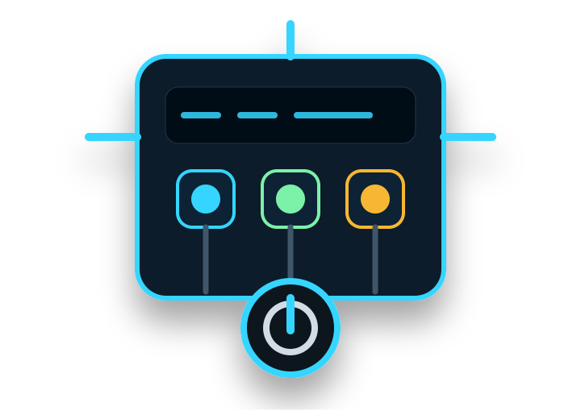
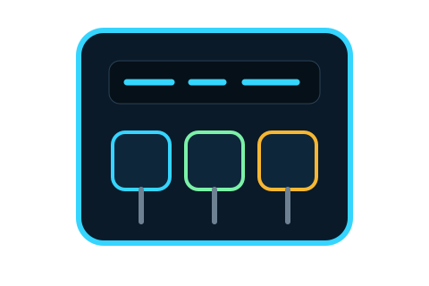
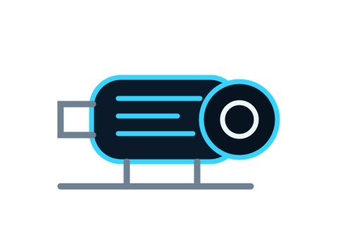
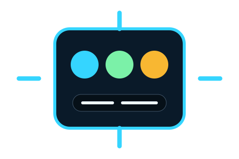

Servicio técnico con mentalidad de ingeniería
Del desorden eléctrico al control operativo.
TEOD CONTROL ayuda a negocios, talleres e industria a resolver tableros, motores, protecciones, mando, diagnóstico y automatización básica con una ejecución segura, limpia y entendible.

Riesgo-37%menos improvisación
EntregaProlijatablero claro
RespuestaDirectaWhatsApp
Checklist previo
Placa · tensión · corriente · protección · mando
Cliente entiende
Problema → solución → prueba final
Tableros eléctricosControl industrialMotores 220/440GuardamotoresContactoresBotonerasDiagnósticoAutomatización básicaMantenimientoProtecciones
Tableros eléctricosControl industrialMotores 220/440GuardamotoresContactoresBotonerasDiagnósticoAutomatización básicaMantenimientoProtecciones
El problema real
El cliente no paga solo por cables. Paga para que la máquina vuelva a trabajar sin miedo.
Paradas
Un motor que no arranca puede detener producción, atención o ventas.
Riesgo
Un tablero sin orden genera fallas, calentamientos y errores humanos.
Duda
Sin diagnóstico, todo parece caro porque nadie explica el problema.
Reproceso
Lo barato mal hecho termina costando dos veces.
Servicios
Una oferta técnica convertida en una experiencia comercial clara.
Servicios ordenados por necesidad del cliente: falla, mejora, tablero, motor, mantenimiento o automatización.
Tableros eléctricos profesionales
Armado, corrección y ordenamiento de tableros con protecciones, contactores, pilotos, canaletas, rotulación y criterio de seguridad.
- Fuerza y mando
- Presentación limpia
- Pruebas finales
Motores, arranques y protecciones
Revisión de motores, conexiones 220/440 según placa, guardamotores, contactores, sentido de giro, corriente y arranque seguro.
- Arranque directo
- Verificación de placa
- Ajuste de protección
Control industrial básico y medio
Botoneras, pilotos, relés, temporizadores, finales de carrera, sensores e interlocks para que la operación sea más clara.
- Mando de equipos
- Señalización
- Secuencias simples
Diagnóstico de fallas eléctricas
Inspección de fallas recurrentes, disparos, calentamientos, falsos contactos, protecciones mal elegidas o conexiones dudosas.
- Causa probable
- Recomendación
- Plan de corrección
Mantenimiento preventivo
Revisión programada de puntos críticos para reducir paradas, riesgos eléctricos y fallas que aparecen cuando más se necesita el equipo.
- Checklist técnico
- Ajustes
- Observaciones
Mejoras y automatización simple
Pequeñas mejoras de mando, señalización y lógica para reducir errores manuales y hacer más confiable la operación diaria.
- Alarmas
- Temporización
- Reducción de errores
Sistema TEOD
No se vende “una visita”. Se vende una ruta de control.
La página comunica método. Eso hace que el cliente perciba más valor y llegue a WhatsApp con menos confusión.
Captura inteligente
Fotos, videos, placa del motor, síntomas, ubicación y urgencia.
Diagnóstico técnico
Se identifica qué puede fallar y qué no conviene improvisar.
Propuesta clara
Alcance, prioridad, materiales probables y riesgo técnico.
Ejecución segura
Trabajo ordenado, protección correcta y pruebas antes de entregar.
Entrega entendible
El cliente sabe cómo quedó, cómo operar y qué vigilar.
Calculadora comercial
¿Cuánto cuesta una parada?
Una herramienta simple para que el cliente entienda que una falla eléctrica no es solo “un arreglo”: puede ser pérdida de producción, tiempo y confianza.
Diagnóstico rápido
El cliente responde 4 pasos y WhatsApp se abre con el mensaje ordenado.
Esto sube la conversión porque elimina la fricción: no le dices “escríbeme”, le das el mensaje casi hecho.
Casos que venden
Espacios listos para reemplazar con fotos reales de tus trabajos.
Cuando pongas fotos reales de antes/después, esta página cambia de “bonita” a “prueba comercial”.
ANTES

Tablero desordenado → tablero operativo
Corrección de distribución, identificación, protecciones y presentación final.
MOTOR

Motor con falla → arranque controlado
Revisión de conexión, corriente, guardamotor, contactor y prueba segura.
CONTROL

Mando confuso → operación clara
Botoneras, pilotos, secuencia y señalización para reducir errores.
Cotización
Convierte la visita en conversación directa por WhatsApp.
Completa lo básico y la página genera un mensaje claro para iniciar la atención sin perder tiempo.
WhatsApp directo
096 739 3585